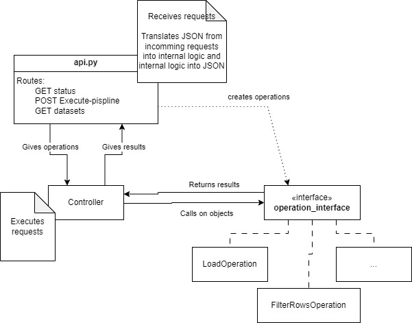

architecture
api.py is the income point of the API. It's where the requests arrive.
It translates any JSON that coems with the request into internal logic and then gives this to the controller to execute.
controller.py and its Controller class are responsible for the delegation of actions to the correct operations.
operation_interface.py contains the interface for all operations. Each operation can perform one specific task.
An operation can have parameters set to define its behaviour and can take outputs of other operations as input.
